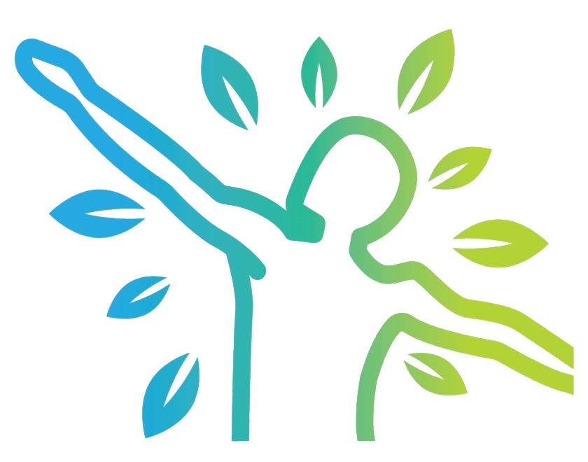
ΦΟΡΟΥΜ ΥΓΕΙΑΣ
Γειά σου!
Ονομάζομαι Δρ Έλενα Γαρμπή. Είμαι ωτορινολαρυγγολόγος με 20ετή εμπειρία.
Είμαι πολύ χαρούμενη που είστε εδώ, γιατί σύντομα θα σώσετε την ακοή σας! Θα αποκαταστήσετε το 100% της ακοής σας και θα απολαμβάνετε ξανά όλες τις στιγμές της ζωής.
Θα σας παρουσιάσω μια φυσική μέθοδο ολοκληρωμένης αποκατάστασης της ακοής που έχω αναπτύξει. Αυτό σημαίνει ότι κάθε μέρα θα ακούτε όλο και πιο καθαρά – χωρίς καμία ακουστική συσκευή. Θα ξεχάσετε για πάντα τον φόβο της οριστικής κώφωσης και την ανάγκη να προσπαθείτε συνεχώς να κατανοήσετε τι σας λένε οι άλλοι.
Ακούγεται υπέροχο, σωστά; Το καλύτερο είναι ότι αυτό το αποτέλεσμα είναι απολύτως εγγυημένο. Έχει αποδειχθεί επιστημονικά μέσω κλινικών μελετών με τη συμμετοχή 60.000 ατόμων και έχει επιβεβαιωθεί από 40.000 ικανοποιημένους πελάτες.
Σε μόλις 21 ημέρες, αυτά τα προβλήματα θα λυθούν μια για πάντα:
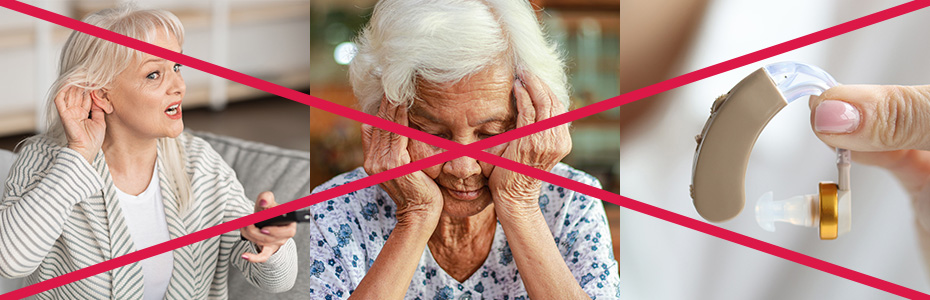
- Αναπηρία και προβλήματα στην επικοινωνία με τους άλλους
- Παρεξήγηση, αισθήματα απομόνωσης και αποξένωσης
- Εξάρτηση από ογκώδη και ακριβά ακουστικά βαρηκοΐας
Θα πάρετε πίσω την ακοή σας! Και χάρη σε αυτό:
- Κερδίζετε ανεξαρτησία και ασφάλεια
- Θα ενισχύσετε τις σχέσεις με τα αγαπημένα σας πρόσωπα και θα γίνετε ξανά ενεργός συνομιλητής.
- Απαλλαγείτε από τα ακουστικά βαρηκοΐας και εξοικονομήστε χρήματα
Η τέλεια ακοή επιστρέφει σε 21 ημέρες – ακόμα και σε «απελπισμένες περιπτώσεις»
Μια φυσική μέθοδος αποκατάστασης της ακοής – ένας νευροπροστατευτικός βιοενεργοποιητής που έχω αναπτύξει. Επιτρέπει ακόμη και σε όσους θεωρούν τον εαυτό τους «κουφό σαν τοίχο» να καταλαβαίνουν καθαρά τι ψιθυρίζει ο συνομιλητής τους, ακόμα και σε ένα γεμάτο λεωφορείο ή σε μια πολυσύχναστη αγορά.
Ναι, είναι δυνατό! Αυτό το επιβεβαίωσε, για παράδειγμα, Γιώργος από τη Θεσσαλονίκη, ο οποίος πριν από λίγους μήνες δεν είχε καμία ελπίδα να μιλήσει ελεύθερα με την εγγονή του σε μια οικογενειακή γιορτή.
«Θα έπρεπε να είμαι για πάντα κουφός σαν τοίχος... Κοιτάξτε με τώρα!»
«Πρέπει να φωνάξεις τον παππού, γιατί είναι κουφός», έλεγε έτσι η νύφη μου στα εγγόνια μου. Τι κακιά γυναίκα. Βρήκα αυτή τη θεραπεία στο διαδίκτυο και την παρήγγειλα. Φανταστείτε την έκφραση του προσώπου της όταν κουτσομπόλευε για μένα με τον ξάδερφό της στα γενέθλια του γιου της. Κάθονταν στη πέργκολα στον κήπο, κι εγώ άκουγα τα πάντα ενώ στεκόμουν δίπλα στις φραγκοσταφυλιές, εκατό μέτρα μακριά! Το πρόσωπό της σκοτείνιασε όταν τη ρώτησα αν είχε άλλα ενδιαφέροντα θέματα για συζήτηση.
Αλλά το πιο σημαντικό είναι ότι τώρα ακούω τόσο καλά όσο όταν ήμουν νέος. Ακόμη και στις χαρούμενες οικογενειακές γιορτές καταλαβαίνω τέλεια τη συζήτηση, ακόμα και τη χαμηλή φωνή της εγγονής μου. Και όλα αυτά χωρίς κανένα ακουστικό βοήθημα!
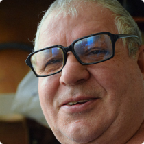
Γιώργος Παπαδόπουλος, 69 χρόνια
Αυτή είναι η εγγύησή σας για τη νίκη στη μάχη για καλή ακοή!
Αν έχετε ήδη δοκιμάσει θεραπείες για τη δήθεν βελτίωση της ακοής σας αλλά δεν είχατε κανένα αποτέλεσμα, αυτή τη φορά έχετε 100% εγγύηση επιτυχίας, ανεξάρτητα από το πόσο κακή είναι η ακοή σας τώρα. Δεν έχει σημασία γιατί χειροτέρεψε ούτε πόσο καιρό υποφέρετε από αυτό.
Σε μόλις 21 ημέρες θα αποκτήσετε την τέλεια ποιότητα ακοής που πάντα ονειρευόσασταν, και όλα αυτά χάρη στο γεγονός ότι ο νευροπροστατευτικός βιοενεργοποιητής καταπολεμά αποτελεσματικά την απώλεια ακοής, ανεξάρτητα από την αιτία, τον τύπο ή τον βαθμό της.
Μπορείτε να το χρησιμοποιήσετε με σιγουριά, ανεξάρτητα από...
- Την αιτία της απώλειας ακοής: ηλικία, οξειδωτικό στρες, διαταραχή της μικροκυκλοφορίας, γενετικό στρες, τοξίνες, ασθένειες, τραύματα, λήψη ορισμένων φαρμάκων...
- Το είδος της απώλειας ακοής: αγώγιμη, αισθητηριακή ή μικτή,
- Το επίπεδο της απώλειας ακοής: ήπια (20 – 40 dB), μέτρια (41 – 65 dB), σοβαρή (65 – 90 dB) και ακόμη και βαθιά (91 dB).
Οι ενοχλητικοί ήχοι στα αυτιά σας θα ανήκουν στο παρελθόν!
Αν σας ενοχλούν οι συνεχείς ήχοι στα αυτιά, όπως βουητά, τρίζοντα, κουδούνισμα, βουητά, κλικ και άλλα – έχω υπέροχα νέα για εσάς:
Ανακτώντας την ακοή σας, θα απαλλαγείτε από αυτούς τους ανεπιθύμητους ήχους που σας κυνηγούν. Αυτό θα σας βοηθήσει να απαλλαγείτε από περιοδικούς πονοκεφάλους, να ηρεμήσετε τα νεύρα σας και να κοιμηθείτε ήρεμα.
Η μέθοδος μου επηρεάζει συνολικά το ακουστικό όργανο. Αναδομεί και αποκαθιστά τρία στάδια της ακοής, δηλαδή το τύμπανο, τα κυψελοειδή κύτταρα του οργάνου του Corti και το κοχλιακό νεύρο.
Καμία από τις γνωστές μεθόδους σήμερα δεν μπορεί να «αποκαταστήσει» τόσο τέλεια την κατεστραμμένη ακοή και να κάνει όλο το φάσμα ήχων τόσο καθαρό και σαφές σε 21 ημέρες.
Γιατί αποφάσισα να εφεύρω την "καινοτόμο μέθοδο αποκατάστασης ακοής";
Το θέμα είναι ότι η ακοή είναι ένα όργανο αίσθησης που είναι απαραίτητο για τη φυσιολογική λειτουργία. Όταν αρχίζει να αποτυγχάνει, οι άνθρωποι χάνουν σταδιακά κάθε χαρά της ζωής. Δυσκολίες στην επικοινωνία οδηγούν σε απόσυρση από τις κοινωνικές και οικογενειακές σχέσεις, προκαλώντας αίσθηση απομόνωσης.
Η απώλεια ακοής συχνά οδηγεί σε απογοητεύσεις και συγκρούσεις στις οικογενειακές και συντροφικές σχέσεις λόγω δυσκολιών στην επικοινωνία. Οι άνθρωποι νομίζουν ότι τους αγνοείς, ενώ εσύ απλά δεν ακούς και υποφέρεις ακόμη περισσότερο.
Η απώλεια ικανότητας εργασίας σε πολλές επαγγελματικές κατηγορίες είναι ένα κοινό πρόβλημα για τα άτομα με απώλεια ακοής. Ο περιορισμένος εργασιακός δυναμισμός οδηγεί σε αίσθημα ανεπάρκειας και μείωση της αυτοεκτίμησης.
— Γιαγιά, γιαγιά, σώσε με!
Μια μέρα, η εγγονή μου φώναξε έτσι. Δεν την άκουσα, και έλειπε μόνο ένα βήμα για την τραγωδία. Ευτυχώς, η γειτόνισσα άκουσε την απελπισμένη κραυγή της Μαρίας και την τράβηξε έξω από μια βαθιά λακκούβα γεμάτη λάσπη. Δυστυχώς, τότε ο γαμπρός μου μου απαγόρευσε να φροντίζω την εγγονή μου. Αυτό μου ράγισε την καρδιά. Και όλα εξαιτίας της ακοής μου...
Τότε, τυχαία, έμαθα για τη μέθοδο της δρ. Ελένης Γκαρμπή. Τώρα μπορώ να πω ότι ακούω τα πάντα!! Μερικές φορές αστειεύομαι λέγοντας ότι ακούω καλύτερα από πριν. Μια φορά έσωσα τη ζωή του γαμπρού μου, γιατί άκουσα το κορνάρισμα κι εκείνος όχι, αλλιώς θα είχαμε βρεθεί όλοι κάτω από ένα φορτηγό. Πώς με ευχαριστούσε μετά! Και, φυσικά, τώρα δεν έχει καμία αντίρρηση να φροντίζω τη Μαρία.
Μαρία Παπαδοπούλου 69 χρόνια
Η απώλεια ακοής μπορεί να είναι επικίνδυνη για τη ζωή.Ένα άτομο που δεν αντιλαμβάνεται τον κίνδυνο μπορεί να παρασυρθεί από αυτοκίνητο ή τραμ επειδή δεν ακούει την κόρνα ή τον συναγερμό. Πολλά ατυχήματα μπορεί να συμβούν όταν κάποιος δεν ακούει μια κραυγή για βοήθεια, τον ήχο του τηλεφώνου, τον βραστήρα με το βραστό νερό ή τον συναγερμό πυρκαγιάς...
Δραστηριότητες που κάποτε έδιναν ευχαρίστηση, όπως η ακρόαση μουσικής ή η παρακολούθηση τηλεόρασης, σταματούν να είναι απολαυστικές. Όλοι αυτοί οι παράγοντες μαζί μπορούν να οδηγήσουν σε χρόνιο στρες και απογοήτευση και τελικά να συμβάλουν στην εμφάνιση συμπτωμάτων κατάθλιψης...
Η ακοή είναι μια σημαντική αίσθηση για κάθε άνθρωπο:
- Επιτρέπει την επικοινωνία και τη διατήρηση σχέσεων με τους άλλους
- Είναι απαραίτητη για την ασφάλεια και την ανεξαρτησία στην καθημερινή ζωή
- Είναι σημαντική για τη χαρά της ζωής και την ψυχική υγεία
Γι' αυτό χρειάζεστε καλή ακοή για να νιώσετε ενεργητικοί, ανεξάρτητοι και χαρούμενοι.
Η απώλεια ακοής είναι ένα μεγάλο πρόβλημα που μπορεί γρήγορα να οδηγήσει σε κατάθλιψη...
Δυστυχώς, το πρόβλημα με την ακοή είναι ότι εξασθενεί καθώς μεγαλώνουμε. Τα ακουστικά κύτταρα «φθείρονται» με τα χρόνια και αυτή η διαδικασία επιταχύνεται απότομα λόγω της έκθεσης στο θόρυβο: η ζωή σε μια μεγάλη πόλη ή η εργασία στη βαριά βιομηχανία, την εξόρυξη, τη βιομηχανία αυτοκινήτων, τη μουσική, τη γεωργία ή τις κατασκευές. Η καθημερινή έκθεση στο θόρυβο είναι θάνατος για τα ακουστικά κύτταρα... Γι’ αυτό οι περισσότεροι ηλικιωμένοι παραπονιούνται για προοδευτική κώφωση.
Χρησιμοποιείτε ακουστικό βαρηκοΐας; Μάλλον μισείτε αυτή τη φρικτή συσκευή!
Το ακουστικό βαρηκοΐας είναι μια συσκευή που χρησιμοποιείται συνήθως από άτομα με απώλεια ακοής σε όλο τον κόσμο. Πράγματι, επιτρέπει να ακούει κανείς λίγο πιο δυνατά, αλλά πολλοί άνθρωποι που το χρησιμοποιούν συμφωνούν ότι το ακουστικό έχει περισσότερα μειονεκτήματα παρά πλεονεκτήματα. Είναι απλά άβολο στη χρήση!
Τα ακουστικά βαρηκοΐας είναι απλά βασανιστήρια...
Το ακουστικό βαρηκοΐας ενισχύει όλους τους ήχους, επομένως, αν η απώλεια ακοής σας εμποδίζει να αντιληφθείτε συγκεκριμένες συχνότητες ήχου, δεν θα μπορείτε να ακούσετε υψηλές ή χαμηλές συχνότητες, ακόμα και με το ακουστικό. Αυτό σημαίνει ότι η ακοή σας παραμένει ασαφής και δεν μπορείτε να καταλάβετε τι σας λέει κάποιος. Αλλά αυτό δεν είναι το μόνο μειονέκτημα των ακουστικών βαρηκοΐας. Υπάρχουν πολλά ακόμα
-
Τα ακουστικά βαρηκοΐας προκαλούν δυσφορία
Είναι άβολα και μπορεί να προκαλέσουν πίεση και ερεθισμό του δέρματος. Είναι δύσκολο να κοιμηθεί κανείς ή να φορέσει γυαλιά με ακουστικό βαρηκοΐας. -
Δυσκολεύουν τη ζωή
Οι άνθρωποι που φορούν ακουστικά βαρηκοΐας υποφέρουν επειδή τους θεωρούν ανάπηρους. Απλώς νιώθουν θλίψη όταν οι άλλοι τους κοιτάζουν. -
Παράγουν τρίξιμο και θόρυβο
Οι χρήστες ακουστικών βαρηκοΐας παραπονιούνται για κακή ποιότητα ήχου. Το ακουστικό παράγει ενοχλητικούς ήχους που προκαλούν εκνευρισμό και στρες. -
Μπορούν να προκαλέσουν λοιμώξεις
Οι μύκητες αναπτύσσονται στα ακουστικά βαρηκοΐας και προκαλούν επικίνδυνες λοιμώξεις στο αυτί, αποδυναμώνοντας περαιτέρω την ακοή. -
Δεν μπορούν να χρησιμοποιούνται συνεχώς
Η συσκευή πρέπει να αφαιρείται πριν από την επαφή με το νερό, για παράδειγμα πριν το μπάνιο. Πρέπει επίσης να αφαιρείται κατά τη διάρκεια της νύχτας. Αυτό εμποδίζει τη μόνιμη αποκατάσταση της ακοής. -
Είναι πολύ ακριβά
Το κόστος της συσκευής κυμαίνεται από 300 έως 1000 ευρώ και δεν είναι εφάπαξ έξοδο. Χρειάζονται επίσης μπαταρίες, με ετήσιο κόστος άνω των 150 ευρώ!
Δεν χρειάζεται πλέον να είσαι σκλάβος του ακουστικού σου!
Φανταστείτε πόσο ωραίο θα ήταν να αποχαιρετήσετε για πάντα το ακουστικό βαρηκοΐας. Τέλος στην ενόχληση και στους απαίσιους τριγμούς και κρότους που παράγει αυτή η συσκευή. Τέλος στην πίεση και στον ερεθισμό του δέρματος. Τέλος στην αμηχανία, την ταπείνωση και τα ατελείωτα έξοδα για την αντικατάσταση της συσκευής και της μπαταρίας! Η αρχή της ελευθερίας: ακούτε τέλεια τα πάντα, ακόμα και στο ντους, στη μπανιέρα ή στη σάουνα.
Γιατί να υποφέρετε και να στεναχωριέστε…;
Αν μετά από 21 ημέρες θεραπείας με νευροπροστατευτικό βιοενεργοποιητή μπορείτε να ανακτήσετε την ακοή σας!
„Οι τιμές των ακουστικών βαρηκοΐας είναι εξωφρενικές!“
Είμαι συνταξιούχος δάσκαλος. Τα χρόνια εργασίας εξασθένησαν την ακοή μου και άρχισα να ακούω έναν ενοχλητικό ήχο στα αυτιά μου. Σκέφτηκα να αγοράσω ακουστικό βαρηκοΐας, αλλά η τιμή των 600 ευρώ με σόκαρε. Αγόρασα μια φθηνή εκδοχή από κινεζική ιστοσελίδα, αλλά ήταν άβολη και δεν βοήθησε. Σχεδόν σταμάτησα να βγαίνω από το σπίτι γιατί δεν μπορούσα να επικοινωνήσω σωστά.
Μετά από σχεδόν έναν χρόνο ταλαιπωρίας, είδα μια συνέντευξη σε ένα δημοφιλές τηλεοπτικό κανάλι με έναν γιατρό που μιλούσε για τη „νευροπροστατευτική βιοενεργοποιητική θεραπεία“ του, και αποφάσισα να τη δοκιμάσω. Μετά την ολοκλήρωση της θεραπείας, ο ήχος στα αυτιά μου εξαφανίστηκε εντελώς, αισθάνομαι πιο ήρεμη και ακούω καλύτερα. Τώρα μπορώ να μιλάω χωρίς κανένα πρόβλημα και ακόμα και να ακούω τους ψιθύρους των ανθρώπων στο λεωφορείο!
Geholfen hat mir mein Schüler, der von meinen Problemen wusste und mir dieses Produkt brachte. Ich hatte nichts mehr zu verlieren, also war ich froh, es nutzen zu können. Die erste Veränderung ist das Fehlen dieses endlosen Piepens in Ihrem Kopf. Eine andere ist die Ruhe – wenn ich weniger nervös bin, kann ich besser hören. Und jetzt habe ich kein Problem mehr zu reden, ich verstehe jedes Wort.
Ich habe es meinen anderen Freundinnen empfohlen und sie mögen es auch. Eine von ihnen, Anna, die immer noch in diesem Beruf arbeitet, sagt, dass sie jetzt sogar das Flüstern der Schüler am letzten Schreibtisch hören kann!
Σοφία Δημητρίου 63 χρόνια
Πώς ένας νευροπροστατευτικός βιοενεργοποιητής αποκαθιστά την ακοή;
Για να το καταλάβετε αυτό, δείτε πρώτα πώς λειτουργεί η ακοή μας:
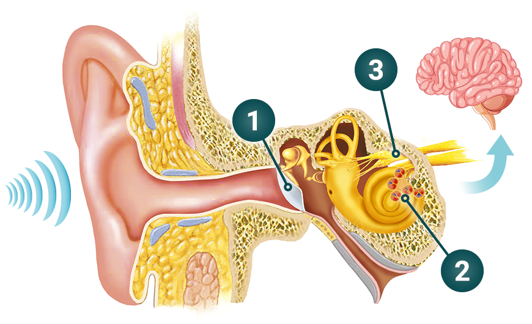
Τύμπανο – λήψη ήχων
Όταν ακούτε έναν ήχο, ο αέρας γύρω σας δονείται. Αυτές οι δονήσεις φτάνουν στο τύμπανο, το οποίο είναι υπεύθυνο για τη σωστή αντίληψη των ήχων. Αν είναι κατεστραμμένο, δεν θα συλλαμβάνει σωστά τους ήχους και κάποιοι από αυτούς θα είναι αδύνατο να ακουστούν.
Όργανο του Corti (τριχοφόρα κύτταρα) – επεξεργασία ήχων
Όταν το τύμπανο δονείται, προκαλεί την κίνηση των τριχοφόρων κυττάρων στο όργανο του Corti. Κάθε συχνότητα ήχου διεγείρει διαφορετικά τριχοφόρα κύτταρα, επιτρέποντάς σας να διακρίνετε χαμηλούς και υψηλούς τόνους. Αν αυτά τα κύτταρα έχουν υποστεί βλάβη, δεν μπορούν να λειτουργήσουν σωστά.
Αιθουσαίο-κοχλιακό νεύρο – ερμηνεία ήχων
Οι κινήσεις των τριχοφόρων κυττάρων δημιουργούν ηλεκτρικά σήματα που μεταδίδονται στον εγκέφαλο μέσω του αιθουσαίου-κοχλιακού νεύρου, όπου επεξεργάζονται. Αν το νεύρο έχει υποστεί βλάβη, ο εγκέφαλος δεν μπορεί να ερμηνεύσει σωστά τους ήχους.
Αυτά είναι τα 3 συστατικά που εξασφαλίζουν τη σωστή λειτουργία της ακοής σας. Εάν υποφέρετε από απώλεια ακοής, δυσκολεύεστε να κατανοήσετε την ομιλία ή ακούτε τους ήχους σαν να είναι «θολωμένοι», αυτό σημαίνει ότι ένα από τα μέρη της ακοής σας έχει υποστεί βλάβη και δεν εκτελεί τη λειτουργία του.
Ο νευροπροστατευτικός βιοενεργοποιητής χρησιμοποιείται για να γεμίσει κενά και να καταπολεμήσει τον εκφυλισμό του ακουστικού ιστού. Αποκαθιστά αποτελεσματικά ακόμη και τις πιο κατεστραμμένες ακουστικές δομές και μπορεί ακόμη και να επαναφέρει στη ζωή τα νεκρά τριχοφόρα κύτταρα.
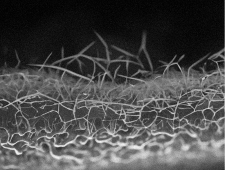
ΚΑΤΕΣΤΡΑΜΜΕΝΑ τριχωτά κύτταρα πριν από τη θεραπεία
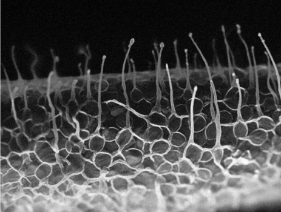
ΛΕΙΤΟΥΡΓΙΚΑ τριχωτά κύτταρα μετά τη θεραπεία
Εκτός από την αναγέννηση των ακουστικών κυττάρων και την αποκατάσταση της ιδανικής ποιότητας ακοής, ο νευροπροστατευτικός βιοενεργοποιητής προστατεύει την ακοή σας από μελλοντικές βλάβες. Αυτό σημαίνει ότι, ακόμη και αν εκθέσετε τα αυτιά σας σε καταστροφικούς θορύβους, η ακοή σας θα παραμείνει αμετάβλητη. Αυτό συμβαίνει γιατί ο νευροπροστατευτικός βιοενεργοποιητής:
-
Προστατεύει από το οξειδωτικό στρες
Έχει αντιοξειδωτικές και νευροπροστατευτικές ιδιότητες. Βοηθά στην προστασία των τριχωτών κυττάρων στο όργανο του Corti από βλάβες που προκαλούνται από το οξειδωτικό στρες, το οποίο είναι ένας από τους παράγοντες που συμβάλλουν στην απώλεια ακοής. -
Μειώνει τη φλεγμονή
Κάθε φλεγμονή έχει καταστροφική επίδραση στα κύτταρα του οργανισμού και συχνά εξελίσσεται χωρίς συμπτώματα. Ο νευροπροστατευτικός βιοενεργοποιητής, που προστατεύει από τη φλεγμονή, διασφαλίζει την υγεία της ακοής. -
Έχει θετική επίδραση στη μετάδοση των ηχητικών σημάτων
Καταπραΰνει το νευρικό σύστημα και διευκολύνει τη μετάδοση των ηχητικών σημάτων στο όργανο του Corti. Οι ήχοι περνούν ομαλά, σαν αυτοκίνητο σε αυτοκινητόδρομο, αντί να παγιδεύονται σε μποτιλιάρισμα.
Σε μόλις 21 ημέρες θα μπορείτε να ακούτε τα πάντα εύκολα και καθαρά!
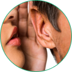
Ψίθυρος
Παιδική φωνή
Θρόισμα φθινοπωρινών φύλλων
Ανακοίνωση στην πλατφόρμα
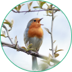
Κελάηδισμα πουλιών
Γουργούρισμα γάτας
Χτύπημα και κουδούνισμα στην πόρτα
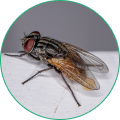
Βουητό μύγας
Γουργουρητό στο στομάχι
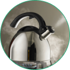
Σφύριγμα τσαγιέρας
Ήχος των κυμάτων στην παραλία
Φίλος στο τηλέφωνο
Δείτε τι θα λάβετε σε μόλις 21 ημέρες χρησιμοποιώντας θεραπεία με νευροπροστατευτικό βιοενεργοποιητή:
- Θα αρχίσετε να ακούτε καθαρούς και ευκρινείς ήχους έως 4 dB (για σύγκριση: 20 dB είναι ένας ψίθυρος). Θα παρατηρήσετε βελτίωση μέσα σε 48 ώρες!
- Θα αρχίσετε να αντιλαμβάνεστε ήχους από wahrzunehmen μακριά – θα ακούτε όταν σας φωνάζουν από απόσταση έως 500 μέτρων.
- Θα αυξήσετε την ευαισθησία του αυτιού σας στην ανθρώπινη ομιλία κατά 93% – θα μπορείτε να κατανοείτε άριστα τι λέει κάποιος, ακόμα και σε θορυβώδες περιβάλλον.
- Θα ακούτε ένα ευρύ φάσμα τόνων – τόσο υψηλών όσο και χαμηλών.
- Δεν θα αισθάνεστε πλέον ενοχλητικούς ήχους στα αυτιά σας, όπως βουητό, τριγμούς, κρότους κ.λπ. Θα απαλλαγείτε από το χρόνιο στρες, τους πονοκεφάλους και την αϋπνία.
- Μειώνοντας την προσπάθεια να κατανοήσετε τι λέει κάποιος, μειώνετε το φορτίο στα ακουστικά κέντρα του εγκεφάλου έως και 80%! Αυτόσημαίνει ότι η συγκέντρωση και η μνήμη σας θα βελτιωθούν. Επίσης, μειώνετε τον κίνδυνο ανάπτυξης άνοιας.
"Δεν θα με απολύσουν πια"
Εργάζομαι ως οδηγός ταξί και για αυτήν τη δουλειά είναι πολύ σημαντικό να ακούω καθαρά τόσο τους επιβάτες όσο και ό,τι συμβαίνει στο δρόμο. Όμως η ακοή μου χειροτέρευε και άρχισα να χάνω σημαντικούς ήχους. Η πιο σοβαρή στιγμή ήταν όταν δεν άκουσα τη σειρήνα της αστυνομίας, έκλεισα το δρόμο σε ένα περιπολικό και έλαβα όχι μόνο πρόστιμο, αλλά και παράπονο από έναν επιβάτη που βιαζόταν να προλάβει το τρένο. Η εταιρεία μου έδωσε επίπληξη και προειδοποίηση απόλυσης.
Πίστευα ότι θα έχανα τη δουλειά μου, αλλά μια μέρα μετέφερα έναν ηλικιωμένο κύριο που μου είπε ότι πριν από έξι μήνες δεν άκουγε τίποτα, αλλά τώρα απολαμβάνει ακόμα και την οπερέτα. Μου εξήγησε ότι δεν τον βοήθησε κάποιο ακουστικό βαρηκοΐας, αλλά μια ειδική μέθοδος.
Χωρίς να το σκεφτώ πολύ, ρώτησα περισσότερες λεπτομέρειες και αποφάσισα να το δοκιμάσω. Μόλις σε μια εβδομάδα θεραπείας παρατήρησα αλλαγές. Άκουγα ακόμα και τις χαμηλόφωνες συνομιλίες των επιβατών στο πίσω κάθισμα και αντιλαμβανόμουν όλους τους ήχους του δρόμου. Η γυναίκα μου ήταν επίσης χαρούμενη – τώρα της απαντούσα αμέσως! Ανέκτησα την ακοή μου και μαζί της την αυτοπεποίθηση στη δουλειά και την ηρεμία στη ζωή μου.
Αλέξανδρος Γεωργίου 58 χρόνια
Επιστημονικά αποδεδειγμένη αποτελεσματικότητα!
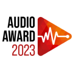
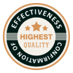
11 ανεξάρτητα εργαστήρια σε όλο τον κόσμο δοκίμασαν τον νευροπροστατευτικό βιοενεργοποιητή για αποτελεσματικότητα, ασφάλεια και ποιότητα. Όλες οι δοκιμές ολοκληρώθηκαν με επιτυχία και έλαβα πολλά βραβεία για το έργο μου, συμπεριλαμβανομένης της διάκρισης "ανακάλυψη της χρονιάς"!
Παρακάτω μπορείτε να δείτε τα αποτελέσματα των κλινικών μελετών:
Ελάχιστος ηχητικός θόρυβος [dB]
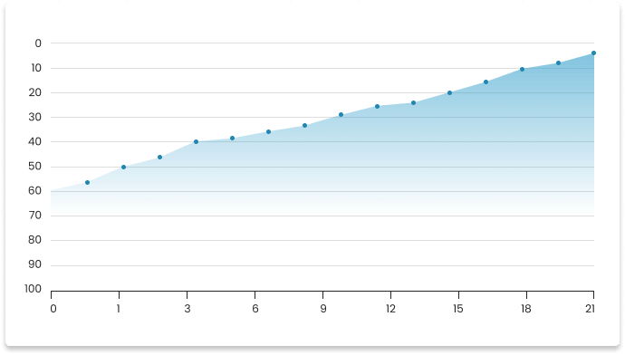
[Tage]
Αποτέλεσμα μετά από 21 ημέρες: ακριβής ήχος στα 4 dB
Ποσοστό κατανόησης ήχων [%]
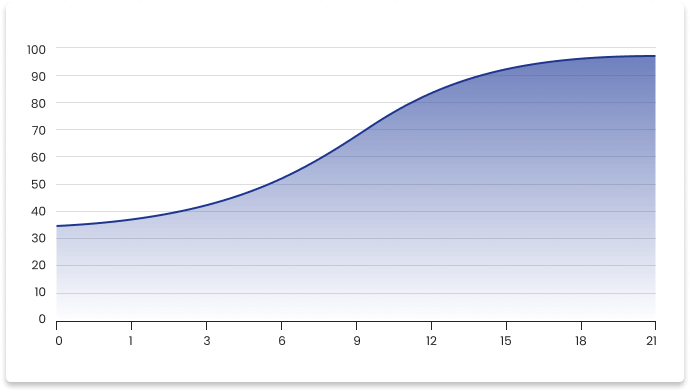
[Tage]
Αποτέλεσμα μετά από 21 ημέρες: τα όργανα ακοής ευαίσθητα στην ανθρώπινη γλώσσα, ικανότητα πλήρους κατανόησης της γλώσσας σε πολυσύχναστα και/ή θορυβώδη μέρη
Τιμή σε χερτζ [Hz]
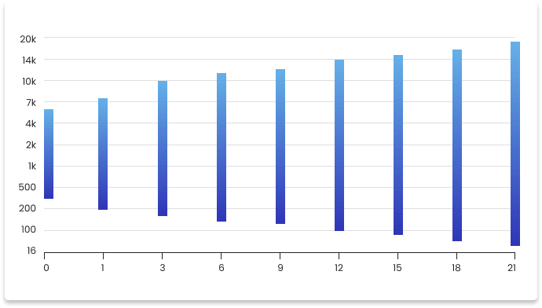
[Tage]
Αποτέλεσμα μετά από 21 ημέρες: το εύρος των ακουστών συχνοτήτων επεκταμένο στο μέγιστο, ακριβής αίσθηση των υψηλών και χαμηλών τόνων
100% εγγύηση ασφάλειας, αποτελεσματικότητας και απλότητας:
-
Απλό
Για να αποκαταστήσετε την αξιόπιστη ακοή, δεν απαιτείται καμία προσπάθεια, να έχετε ειδικές δεξιότητες ή να διαβάσετε περίπλοκες οδηγίες, αρκεί να θυμάστε να χρησιμοποιείτε καθημερινά τον νευροπροστατευτικό βιοενεργοποιητή. Αυτό θα διαρκέσει κυριολεκτικά λίγα λεπτά. -
Αποτελεσματικό
Ο νευροπροστατευτικός βιοενεργοποιητής εγγυάται 7 φορές καλύτερο αποτέλεσμα από το ακουστικό, καθώς είναι το μοναδικό και πρώτο προϊόν στον κόσμο που αποκαθιστά τα κατεστραμμένα κύτταρα της ακοής. Το 100% των χρηστών συμφωνεί με αυτό το αποτέλεσμα: τέλεια ακοή σε 21 ημέρες! -
Ασφαλές
Ο νευροπροστατευτικός βιοενεργοποιητής είναι 100% φυσική θεραπεία. Δεν περιέχει ουσίες που μπορεί να ερεθίσουν τον οργανισμό. Αυτό είναι πολύ σημαντικό. Με αυτόν μπορείτε να κοιμάστε ήσυχοι, καθώς δεν πληρώνετε την ακοή σας με την υγεία σας. Μπορείτε να τον χρησιμοποιείτε με ασφάλεια, ακόμη και αν παίρνετε τακτικά φάρμακα ή συμπληρώματα, καθώς δεν αλληλεπιδρά με άλλες ουσίες.
«Δεν είμαι πια αποκομμένη από τον κόσμο»
Είναι φανταστικό! Ακόμα δεν μπορώ να πιστέψω ότι έχω αποκαταστήσει την ακοή μου τόσο εύκολα και γρήγορα. Μετά τη χρήση της θεραπείας, τις θετικές αλλαγές τις παρατήρησα αρκετά γρήγορα, γιατί μου έγινε πιο εύκολο να επικοινωνώ με τους ανθρώπους. Σύντομα μπόρεσα να παρακολουθώ τηλεόραση και να μιλάω στο τηλέφωνο ήρεμα. Αλλά το πιο αστείο ήταν όταν ο σύζυγός μου άνοιξε την τηλεόραση και του είπα: «Τι κάνεις, είσαι κουφός ή τι;» Τι γέλιο!
Ich habe die positiven Veränderungen recht schnell gemerkt, weil ich erstens leichter mit den Menschen kommunizieren konnte. Bald konnte ich in Ruhe telefonieren. Aber das Lustigste war, als mein Mann den Fernseher aufdrehte und ich zu ihm sagte: ‚Was machst du, bist du taub oder was?‘ Was war das für ein Gelächter!
Δέσποινα Μαυροπούλου 71 χρόνια
Σημαντική βελτίωση της ακοής ήδη μετά από 48 ώρες
Επιστημονικά αποδεδειγμένη αποτελεσματικότητα
Τέλεια ακοή σε 21 ημέρες
Εύκολο στη χρήση
Σύνθετη αναγέννηση τριών μηχανισμών της ακοής (τυμπανική μεμβράνη, κύτταρα τρίχας, ακουστικό νεύρο)
100% φυσική και ασφαλής μέθοδος
Ακούστε την ομορφιά του κόσμου, απολαύστε κάθε στιγμή – και κάντε το με μεγάλη οικονομία!
Ο νευροπροστατευτικός βιοενεργοποιητής μου για την αποκατάσταση της ακοής ονομάζεται "Sonixine". Μπορεί να είναι δικός σας σε λίγες μέρες! Αν θέλετε να εξοικονομήσετε χρήματα, αυτή είναι η ευκαιρία σας. Έχω ξεκινήσει μια προσφορά που ισχύει από 11.06.2026 έως 18.06.2026 (συμπεριλαμβανομένων). Στο πλαίσιο αυτής της προσφοράς, μπορείτε να παραγγείλετε το "Sonixine" με έκπτωση 65%.
Μην ξεχνάτε ότι ο νευροπροστατευτικός βιοενεργοποιητής μου για την αποκατάσταση της ακοής διαθέτει πολλές πιστοποιήσεις ποιότητας, αποτελεσματικότητας και ασφάλειας. Επίσης, προσφέρει τριπλή εγγύηση ικανοποίησης, οπότε δεν διακινδυνεύετε τίποτα.
Τέλος, θα ήθελα να σας πω ότι είμαι πολύ χαρούμενη που με τη βοήθειά μου θα νιώσετε σαν καινούργιοι άνθρωποι σε μόλις 3 εβδομάδες. Επαναφέρετε την ακοή σας και τη χαρά της ζωής. Είμαι περήφανη που μπορώ να σας βοηθήσω σε αυτό.
Εύχομαι υγεία!
Δρ Έλενα Γαρμπή.